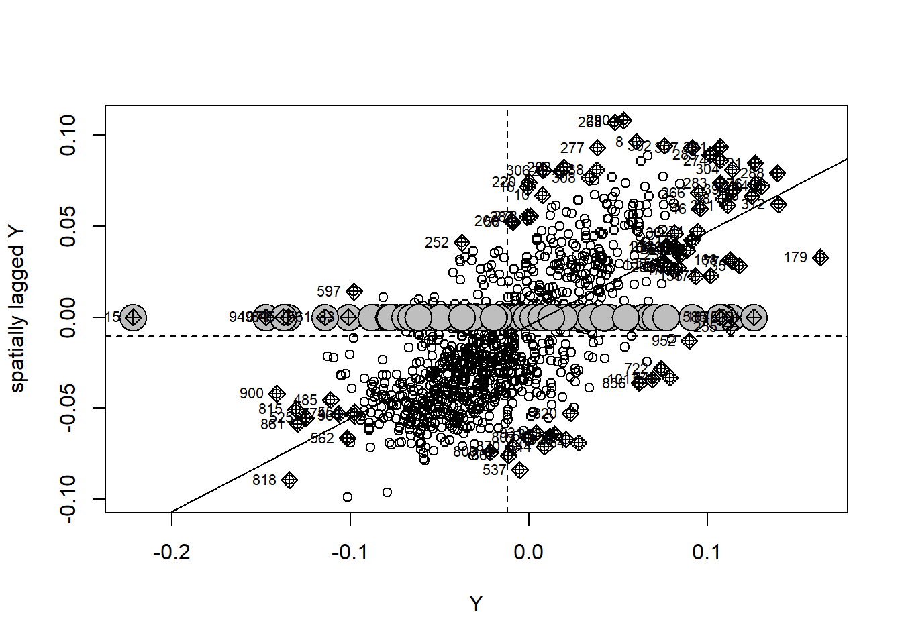

── Attaching core tidyverse packages ──────────────────────── tidyverse 2.0.0 ──
✔ dplyr 1.1.4 ✔ readr 2.1.5
✔ forcats 1.0.0 ✔ stringr 1.5.1
✔ ggplot2 3.5.1 ✔ tibble 3.2.1
✔ lubridate 1.9.4 ✔ tidyr 1.3.1
✔ purrr 1.0.4
── Conflicts ────────────────────────────────────────── tidyverse_conflicts() ──
✖ dplyr::filter() masks stats::filter()
✖ dplyr::lag() masks stats::lag()
ℹ Use the conflicted package (<http://conflicted.r-lib.org/>) to force all conflicts to become errors
library(spdep)
Cargando paquete requerido: spData
To access larger datasets in this package, install the spDataLarge
package with: `install.packages('spDataLarge',
repos='https://nowosad.github.io/drat/', type='source')`
Cargando paquete requerido: sf
Linking to GEOS 3.13.0, GDAL 3.10.1, PROJ 9.5.1; sf_use_s2() is TRUE
library(spatialreg)
Cargando paquete requerido: Matrix
Adjuntando el paquete: 'Matrix'
The following objects are masked from 'package:tidyr':
expand, pack, unpack
Adjuntando el paquete: 'spatialreg'
The following objects are masked from 'package:spdep':
get.ClusterOption, get.coresOption, get.mcOption,
get.VerboseOption, get.ZeroPolicyOption, set.ClusterOption,
set.coresOption, set.mcOption, set.VerboseOption,
set.ZeroPolicyOption
library(gamlss)
Cargando paquete requerido: splines
Cargando paquete requerido: gamlss.data
Adjuntando el paquete: 'gamlss.data'
The following object is masked from 'package:datasets':
sleep
Cargando paquete requerido: gamlss.dist
Cargando paquete requerido: nlme
Adjuntando el paquete: 'nlme'
The following object is masked from 'package:dplyr':
collapse
Cargando paquete requerido: parallel
********** GAMLSS Version 5.4-22 **********
For more on GAMLSS look at https://www.gamlss.com/
Type gamlssNews() to see new features/changes/bug fixes.
Adjuntando el paquete: 'plotly'
The following object is masked from 'package:ggplot2':
last_plot
The following object is masked from 'package:stats':
filter
The following object is masked from 'package:graphics':
layout
#cargamos los datos del mapapov<-read_sf("shapefiles_provincias_espana/shapefiles_provincias_espana.shp", , options ="ENCODING=UTF8")nacimientos_filtrado <- Nacimientos %>%filter(Periodo >="2002M01") %>%filter(Provincias !="Total") poblacion_filtrado <- Poblacion %>%filter(Provincias !="Total") %>%filter(Provincias !="residente") %>%filter(Sexo =="Total") %>%filter(Periodo >="2002")IPC_filtrado <- IPC_Grupos %>%filter(`Grupos ECOICOP`=="Índice general") %>%filter(Provincias !="Nacional") %>%filter(`Tipo de dato`=="Índice") %>%filter(Periodo >="2002M01")datos <-merge(x=nacimientos_filtrado, y=IPC_filtrado, by.x=c("Provincias","Periodo"), by.y=c("Provincias","Periodo"), all.x=TRUE) %>%separate(Periodo, into =c("Año", "Mes"), sep ="M", extra ="merge")datos2 <-merge(x=datos, y=poblacion_filtrado, by.x=c("Provincias", "Año"), by.y=c("Provincias","Periodo"), all.x=TRUE) %>%select(Provincias, Año, Mes, Total.x, Total.y, Total) %>%rename(Total.Nacimientos = Total.x, Total.IPC = Total.y, Total.Poblacion=Total) %>%# Separar la columna Provincias en codigo_provincia y nombre_provinciaseparate(Provincias, into =c("codigo_provincia", "nombre_provincia"), sep =" ", extra ="merge") %>%mutate(tasaNaci =1E5*Total.Nacimientos/Total.Poblacion)# De momento consideraremos la media anual df <- datos2 %>%group_by(codigo_provincia, nombre_provincia, Año) %>%summarise(tasa_nacim_media_año =mean(tasaNaci, na.rm =TRUE), nacimientosaño =sum(Total.Nacimientos, na.rm =TRUE), ipc_media_año =mean(Total.IPC, na.rm =TRUE),.groups ="drop") %>% dplyr::arrange(codigo_provincia,,nombre_provincia, Año) %>% dplyr::group_by(codigo_provincia) %>% dplyr::mutate(Cambios =(nacimientosaño-lag(nacimientosaño))/lag(nacimientosaño)) %>%ungroup()pov2 <-merge(x=pov, y=df, by.x="codigo", by.y="codigo_provincia", all.x=TRUE)
Mapa de la tasa media de natalidad por provincia
#PAra eso consideraremos la media de la tasa de natalidad de todos los datos historicos por provinciatasa_media_prov <- datos2 %>%group_by(codigo_provincia, nombre_provincia) %>%summarise(tasa_media =mean(tasaNaci, na.rm =TRUE),ipc_medio =mean(Total.IPC, na.rm =TRUE))
`summarise()` has grouped output by 'codigo_provincia'. You can override using
the `.groups` argument.
pov_ord <- pov2 %>%filter(!is.na(Cambios)) %>%arrange(Año, nombre_provincia) # MUY IMPORTANTE: primero por año, luego provinciasf_use_s2(FALSE)
Spherical geometry (s2) switched off
cont.nb3 <-poly2nb(pov_ord %>%filter(Año ==2003)) # cualquier año sirve pk es fija
although coordinates are longitude/latitude, st_intersects assumes that they
are planar
Warning in poly2nb(pov_ord %>% filter(Año == 2003)): some observations have no neighbours;
if this seems unexpected, try increasing the snap argument.
Warning in poly2nb(pov_ord %>% filter(Año == 2003)): neighbour object has 6 sub-graphs;
if this sub-graph count seems unexpected, try increasing the snap argument.
W_base <-nb2mat(cont.nb3, style ="W", zero.policy =TRUE) # matriz normalW_sparse <-Matrix(W_base, sparse =TRUE) # matriz dispersa: solo guarda los elementos diferentes de 0 y sus posiciones# Crear matriz identidad de orden 20 (años)I20 <-Diagonal(21)# Kronecker: W final para el modeloW_big <-kronecker(I20, W_sparse)dataTest = plm::pdata.frame(pov_ord, index=c("codigo", "Año"))splm::slmtest(Cambios~1, data=dataTest, listw=W_base)
LM test for spatial error dependence
data: formula
LM = 566.29, df = 1, p-value < 2.2e-16
alternative hypothesis: spatial error dependence
Moran I test under randomisation
data: pov_ord$Cambios
weights: W_base
n reduced by no-neighbour observations
Moran I statistic standard deviate = 24.084, p-value < 2.2e-16
alternative hypothesis: greater
sample estimates:
Moran I statistic Expectation Variance
0.5148252552 -0.0010141988 0.0004587369
Como resultado vemos que el indice de Moran es de 0.56 que es un valor positivo y elevado indicando autocorrelacion espacial positiva (areas geográficamente cercanas tienden a tener tasas de naciemiento similares). Además el p-valor es bajo asi que es estadisticamente significativo
ANALISIS ESTADÍSTICO
Construimos las matrices para el modelo:
# Crear la matriz W base (52x52) y convertir a matriz dispersacont.nb3 <-poly2nb(pov_ord %>%filter(Año ==2003)) # cualquier año sirve pk es fija
although coordinates are longitude/latitude, st_intersects assumes that they
are planar
Warning in poly2nb(pov_ord %>% filter(Año == 2003)): some observations have no neighbours;
if this seems unexpected, try increasing the snap argument.
Warning in poly2nb(pov_ord %>% filter(Año == 2003)): neighbour object has 6 sub-graphs;
if this sub-graph count seems unexpected, try increasing the snap argument.
W_base <-nb2mat(cont.nb3, style ="W", zero.policy =TRUE) # matriz normalW_sparse <-Matrix(W_base, sparse =TRUE) # matriz dispersa: solo guarda los elementos diferentes de 0 y sus posiciones# Crear matriz identidad de orden 20 (años)I20 <-Diagonal(21)# Kronecker: W final para el modeloW_big <-kronecker(I20, W_sparse)# Crear matriz temporal g_{20x20}g_base <-matrix(0, nrow =21, ncol =21)for (i in2:21) { g_base[i, i -1] <-1}G_time <-Matrix(g_base, sparse =TRUE)# Identidad de provinciasI52 <-Diagonal(52)# Kronecker: G final para el modeloG_big <-kronecker(G_time, I52)# Crear vectores Y e XY <- pov_ord$CambiosX <-cbind(pov_ord$ipc_media_año, as.numeric(pov_ord$Año))
# Convertir W_big y G_big a matrices de adyacencia binarias (0/1)#W_adj <- as.matrix(W_big)#W_adj[W_adj != 0] <- 1#G_adj <- as.matrix(G_big)#G_adj[G_adj != 0] <- 1# Crear listas de vecinosW_nb <-mat2listw(W_big, style ="W", zero.policy =TRUE)
Warning in sn2listw(df, style = style, zero.policy = zero.policy,
from_mat2listw = TRUE): neighbour object has 126 sub-graphs
Warning in mat2listw(W_big, style = "W", zero.policy = TRUE): neighbour object
has 126 sub-graphs
Warning in sn2listw(df, style = style, zero.policy = zero.policy,
from_mat2listw = TRUE): neighbour object has 52 sub-graphs
Warning in mat2listw(G_big, style = "W", zero.policy = TRUE): neighbour object
has 52 sub-graphs
# Creamos el data frame final con las variables necesariasmodelo_df <-data.frame(tasa = Y,ipc = X[,1],agno = X[,2])moran.plot(Y,listw = W_nb,zero.policy =TRUE)

moran.test(Y,listw = W_nb,zero.policy =TRUE)
Moran I test under randomisation
data: Y
weights: W_nb
n reduced by no-neighbour observations
Moran I statistic standard deviate = 24.084, p-value < 2.2e-16
alternative hypothesis: greater
sample estimates:
Moran I statistic Expectation Variance
0.5148252552 -0.0010141988 0.0004587369
Call:sacsarlm(formula = tasa ~ ipc + agno, data = modelo_df, listw = W_nb,
listw2 = G_nb, zero.policy = TRUE)
Residuals:
Min 1Q Median 3Q Max
-0.2113454 -0.0206265 -0.0010212 0.0206092 0.1430458
Type: sac
Coefficients: (asymptotic standard errors)
Estimate Std. Error z value Pr(>|z|)
(Intercept) 4.69050060 0.96967806 4.8372 1.317e-06
ipc 0.00019114 0.00030602 0.6246 0.5322
agno -0.00234203 0.00049453 -4.7359 2.181e-06
Rho: 0.54389
Asymptotic standard error: 0.030222
z-value: 17.996, p-value: < 2.22e-16
Lambda: -0.20132
Asymptotic standard error: 0.030406
z-value: -6.6209, p-value: 3.5698e-11
LR test value: 288.85, p-value: < 2.22e-16
Log likelihood: 2079.879 for sac model
ML residual variance (sigma squared): 0.0012093, (sigma: 0.034775)
Number of observations: 1092
Number of parameters estimated: 6
AIC: -4147.8, (AIC for lm: -3862.9)
Interpretacion:
El coeficiente del IPC es positivo pero no significativo.
Rho: mide autocorrelación espacial en la variable dependiente (Y) a través de la matriz W. El valor es pequeño, pero positivo y significativo lo que indica dependencia espacial leve: la tasa de nacimiento en una provincia depende un poco de las provincias vecinas en el mismo año.
Lambda: mide la autocorrelación en el error entre periodos, a través de la matriz G (el tiempo). Nos ha dado exactamente 1 con error muy bajo lo indica que hay una altísima dependencia temporal.
Parece que el modelo espaciotemporal mejora mucho respecto a uno lineal sin estos factores (el AIC reduce muchisimo)
Moran I test under randomisation
data: res_sarar
weights: W_nb
n reduced by no-neighbour observations
Moran I statistic standard deviate = 0.29696, p-value = 0.3832
alternative hypothesis: greater
sample estimates:
Moran I statistic Expectation Variance
0.0053414095 -0.0010141988 0.0004580472
Indice de moran positivo alto y sifnidicativo… Todavia hay autocorrelacion espacial significativa en los residuos.
Moran I test under randomisation
data: res_sar
weights: W_nb
n reduced by no-neighbour observations
Moran I statistic standard deviate = -0.10983, p-value = 0.5437
alternative hypothesis: greater
sample estimates:
Moran I statistic Expectation Variance
-0.0033651157 -0.0010141988 0.0004581935
Moran I test under randomisation
data: res_sem
weights: W_nb
n reduced by no-neighbour observations
Moran I statistic standard deviate = -1.3484, p-value = 0.9112
alternative hypothesis: greater
sample estimates:
Moran I statistic Expectation Variance
-0.0298826610 -0.0010141988 0.0004583363